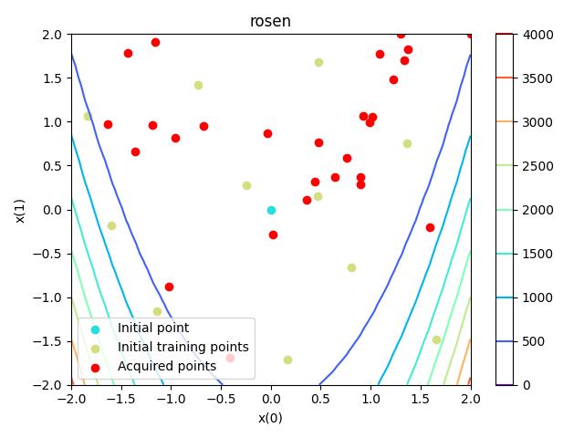

Note
Click here to download the full example code
Surrogate-based optimization using SMT.¶
The surrogate modeling toolbox (SMT)
is an open-source Python package for surrogate modeling,
with a focus on derivatives.
Bayesian optimization features are also available through its EGO class,
with various acquisition criteria and strategies to acquire points in parallel.
from __future__ import annotations
from gemseo import configure_logger
from gemseo import execute_algo
from gemseo.post.dataset.zvsxy import ZvsXY
from gemseo.problems.dataset.rosenbrock import create_rosenbrock_dataset
from gemseo.problems.optimization.rosenbrock import Rosenbrock
configure_logger()
Out:
<RootLogger root (INFO)>
In this example, we seek to minimize the Rosenbrock function \(f(x,y)=(1-x)^2+100(y-x^2)^2\) over the design space \([-2,2]^2\). First, we instantiate the problem with \((0, 0)\) as initial guess:
problem = Rosenbrock()
Then, we minimize the Rosenbrock function using:
- the
"SMT_EGO"algorithm, - a maximum number of evaluations equal to 40, including the initial one at the center of the design space (this first point is common to all optimization algorithms) and the initial training dataset,
-
its default settings, namely
-
the expected improvement as acquisition criterion,
- 1 point acquired at a time,
- the Kriging-based surrogate model
"KRG", - 10 initial training points based on a latin hypercube sampling (LHS) technique,
- a multi-start local optimization of the acquisition criterion from 50 start points with a limit of 20 iterations per local optimization.
execute_algo(problem, algo_name="SMT_EGO", max_iter=40)
Out:
INFO - 07:15:22: Optimization problem:
INFO - 07:15:22: minimize rosen(x) = sum( 100*(x[1:] - x[:-1]**2)**2 + (1 - x[:-1])**2 )
INFO - 07:15:22: with respect to x
INFO - 07:15:22: over the design space:
INFO - 07:15:22: +------+-------------+-------+-------------+-------+
INFO - 07:15:22: | Name | Lower bound | Value | Upper bound | Type |
INFO - 07:15:22: +------+-------------+-------+-------------+-------+
INFO - 07:15:22: | x[0] | -2 | 0 | 2 | float |
INFO - 07:15:22: | x[1] | -2 | 0 | 2 | float |
INFO - 07:15:22: +------+-------------+-------+-------------+-------+
INFO - 07:15:22: Solving optimization problem with algorithm SMT_EGO:
INFO - 07:15:22: 2%|▎ | 1/40 [00:00<00:00, 2788.77 it/sec, obj=1]
INFO - 07:15:22: 5%|▌ | 2/40 [00:00<00:02, 13.14 it/sec, obj=6.2]
INFO - 07:15:22: 8%|▊ | 3/40 [00:00<00:01, 19.64 it/sec, obj=613]
INFO - 07:15:22: 10%|█ | 4/40 [00:00<00:01, 26.06 it/sec, obj=174]
INFO - 07:15:22: 12%|█▎ | 5/40 [00:00<00:01, 32.45 it/sec, obj=760]
INFO - 07:15:22: 15%|█▌ | 6/40 [00:00<00:00, 38.78 it/sec, obj=1.78e+3]
INFO - 07:15:22: 18%|█▊ | 7/40 [00:00<00:00, 45.09 it/sec, obj=534]
INFO - 07:15:22: 20%|██ | 8/40 [00:00<00:00, 51.34 it/sec, obj=210]
INFO - 07:15:22: 22%|██▎ | 9/40 [00:00<00:00, 57.56 it/sec, obj=303]
INFO - 07:15:22: 25%|██▌ | 10/40 [00:00<00:00, 63.74 it/sec, obj=83.5]
INFO - 07:15:22: 28%|██▊ | 11/40 [00:00<00:00, 69.88 it/sec, obj=125]
INFO - 07:15:24: 30%|███ | 12/40 [00:01<00:03, 9.17 it/sec, obj=0.682]
INFO - 07:15:25: 32%|███▎ | 13/40 [00:02<00:05, 4.99 it/sec, obj=9.17]
INFO - 07:15:26: 35%|███▌ | 14/40 [00:03<00:06, 3.79 it/sec, obj=0.0477]
INFO - 07:15:27: 38%|███▊ | 15/40 [00:04<00:07, 3.25 it/sec, obj=401]
INFO - 07:15:28: 40%|████ | 16/40 [00:05<00:08, 2.80 it/sec, obj=9.16]
INFO - 07:15:29: 42%|████▎ | 17/40 [00:06<00:08, 2.57 it/sec, obj=0.101]
INFO - 07:15:30: 45%|████▌ | 18/40 [00:07<00:08, 2.45 it/sec, obj=4.81]
INFO - 07:15:30: 48%|████▊ | 19/40 [00:07<00:08, 2.38 it/sec, obj=120]
INFO - 07:15:31: 50%|█████ | 20/40 [00:08<00:08, 2.29 it/sec, obj=4.25]
INFO - 07:15:32: 52%|█████▎ | 21/40 [00:09<00:08, 2.21 it/sec, obj=399]
INFO - 07:15:33: 55%|█████▌ | 22/40 [00:10<00:08, 2.13 it/sec, obj=347]
INFO - 07:15:33: 57%|█████▊ | 23/40 [00:11<00:08, 2.06 it/sec, obj=26.6]
INFO - 07:15:34: 60%|██████ | 24/40 [00:11<00:07, 2.01 it/sec, obj=1.76]
INFO - 07:15:35: 62%|██████▎ | 25/40 [00:12<00:07, 1.97 it/sec, obj=748]
INFO - 07:15:36: 65%|██████▌ | 26/40 [00:13<00:07, 1.92 it/sec, obj=10.7]
INFO - 07:15:37: 68%|██████▊ | 27/40 [00:14<00:06, 1.88 it/sec, obj=145]
INFO - 07:15:37: 70%|███████ | 28/40 [00:15<00:06, 1.84 it/sec, obj=1.82e+3]
INFO - 07:15:38: 72%|███████▎ | 29/40 [00:15<00:06, 1.82 it/sec, obj=76.9]
INFO - 07:15:39: 75%|███████▌ | 30/40 [00:16<00:05, 1.78 it/sec, obj=4.14]
INFO - 07:15:40: 78%|███████▊ | 31/40 [00:17<00:05, 1.75 it/sec, obj=35.1]
INFO - 07:15:41: 80%|████████ | 32/40 [00:18<00:04, 1.73 it/sec, obj=291]
INFO - 07:15:42: 82%|████████▎ | 33/40 [00:19<00:04, 1.70 it/sec, obj=55.6]
INFO - 07:15:42: 85%|████████▌ | 34/40 [00:20<00:03, 1.69 it/sec, obj=7.48]
INFO - 07:15:43: 88%|████████▊ | 35/40 [00:21<00:03, 1.66 it/sec, obj=29.8]
INFO - 07:15:44: 90%|█████████ | 36/40 [00:21<00:02, 1.65 it/sec, obj=371]
INFO - 07:15:45: 92%|█████████▎| 37/40 [00:22<00:01, 1.63 it/sec, obj=24.2]
INFO - 07:15:46: 95%|█████████▌| 38/40 [00:23<00:01, 1.61 it/sec, obj=28.2]
INFO - 07:15:47: 98%|█████████▊| 39/40 [00:24<00:00, 1.59 it/sec, obj=18.4]
INFO - 07:15:48: 100%|██████████| 40/40 [00:25<00:00, 1.57 it/sec, obj=36.1]
INFO - 07:15:48: Optimization result:
INFO - 07:15:48: Optimizer info:
INFO - 07:15:48: Status: None
INFO - 07:15:48: Message: None
INFO - 07:15:48: Number of calls to the objective function by the optimizer: 0
INFO - 07:15:48: Solution:
INFO - 07:15:48: Objective: [0.04770946]
INFO - 07:15:48: Design space:
INFO - 07:15:48: +------+-------------+--------------------+-------------+-------+
INFO - 07:15:48: | Name | Lower bound | Value | Upper bound | Type |
INFO - 07:15:48: +------+-------------+--------------------+-------------+-------+
INFO - 07:15:48: | x[0] | -2 | 0.7466740126279879 | 2 | float |
INFO - 07:15:48: | x[1] | -2 | 0.7488427592686571 | 2 | float |
INFO - 07:15:48: +------+-------------+--------------------+-------------+-------+
We can see that the solution is close to the theoretical one \((x^*,f^*)=((1,1),0)\).
We can also visualize all the evaluations and note that most of the points have been added in the valley as expected:
optimization_history = problem.to_dataset()
initial_point = optimization_history[0:1]
initial_point.name = "Initial point"
initial_training_points = optimization_history[1:12]
initial_training_points.name = "Initial training points"
acquired_points = optimization_history[12:]
acquired_points.name = "Acquired points"
visualization = ZvsXY(
create_rosenbrock_dataset(900),
("x", 0),
("x", 1),
"rosen",
fill=False,
other_datasets=(initial_point, initial_training_points, acquired_points),
)
visualization.execute(save=False, show=True)

Out:
[<Figure size 640x480 with 2 Axes>]
Lastly, we can compare the solution to the one obtained with COBYLA, which is another popular gradient-free optimization algorithm:
execute_algo(Rosenbrock(), algo_name="NLOPT_COBYLA", max_iter=40)
Out:
INFO - 07:15:48: Optimization problem:
INFO - 07:15:48: minimize rosen(x) = sum( 100*(x[1:] - x[:-1]**2)**2 + (1 - x[:-1])**2 )
INFO - 07:15:48: with respect to x
INFO - 07:15:48: over the design space:
INFO - 07:15:48: +------+-------------+-------+-------------+-------+
INFO - 07:15:48: | Name | Lower bound | Value | Upper bound | Type |
INFO - 07:15:48: +------+-------------+-------+-------------+-------+
INFO - 07:15:48: | x[0] | -2 | 0 | 2 | float |
INFO - 07:15:48: | x[1] | -2 | 0 | 2 | float |
INFO - 07:15:48: +------+-------------+-------+-------------+-------+
INFO - 07:15:48: Solving optimization problem with algorithm NLOPT_COBYLA:
INFO - 07:15:48: 2%|▎ | 1/40 [00:00<00:00, 2095.06 it/sec, obj=1]
INFO - 07:15:48: 5%|▌ | 2/40 [00:00<00:00, 1937.77 it/sec, obj=100]
INFO - 07:15:48: 8%|▊ | 3/40 [00:00<00:00, 2263.93 it/sec, obj=101]
INFO - 07:15:48: 10%|█ | 4/40 [00:00<00:00, 1903.47 it/sec, obj=148]
INFO - 07:15:48: 12%|█▎ | 5/40 [00:00<00:00, 1830.77 it/sec, obj=24.8]
INFO - 07:15:48: 15%|█▌ | 6/40 [00:00<00:00, 1806.98 it/sec, obj=3.64]
INFO - 07:15:48: 18%|█▊ | 7/40 [00:00<00:00, 1784.70 it/sec, obj=6.11]
INFO - 07:15:48: 20%|██ | 8/40 [00:00<00:00, 1786.24 it/sec, obj=1.88]
INFO - 07:15:48: 22%|██▎ | 9/40 [00:00<00:00, 1796.87 it/sec, obj=1.4]
INFO - 07:15:48: 25%|██▌ | 10/40 [00:00<00:00, 1789.00 it/sec, obj=0.954]
INFO - 07:15:48: 28%|██▊ | 11/40 [00:00<00:00, 1794.04 it/sec, obj=1.21]
INFO - 07:15:48: 30%|███ | 12/40 [00:00<00:00, 1793.01 it/sec, obj=0.861]
INFO - 07:15:48: 32%|███▎ | 13/40 [00:00<00:00, 1799.60 it/sec, obj=0.88]
INFO - 07:15:48: 35%|███▌ | 14/40 [00:00<00:00, 1799.47 it/sec, obj=0.848]
INFO - 07:15:48: 38%|███▊ | 15/40 [00:00<00:00, 1801.99 it/sec, obj=0.82]
INFO - 07:15:48: 40%|████ | 16/40 [00:00<00:00, 1804.54 it/sec, obj=0.751]
INFO - 07:15:48: 42%|████▎ | 17/40 [00:00<00:00, 1815.25 it/sec, obj=0.759]
INFO - 07:15:48: 45%|████▌ | 18/40 [00:00<00:00, 1816.46 it/sec, obj=0.753]
INFO - 07:15:48: 48%|████▊ | 19/40 [00:00<00:00, 1820.49 it/sec, obj=0.778]
INFO - 07:15:48: 50%|█████ | 20/40 [00:00<00:00, 1821.51 it/sec, obj=0.744]
INFO - 07:15:48: 52%|█████▎ | 21/40 [00:00<00:00, 1825.77 it/sec, obj=0.744]
INFO - 07:15:48: 55%|█████▌ | 22/40 [00:00<00:00, 1824.26 it/sec, obj=0.748]
INFO - 07:15:48: 57%|█████▊ | 23/40 [00:00<00:00, 1820.99 it/sec, obj=0.73]
INFO - 07:15:48: 60%|██████ | 24/40 [00:00<00:00, 1822.65 it/sec, obj=0.724]
INFO - 07:15:48: 62%|██████▎ | 25/40 [00:00<00:00, 1817.29 it/sec, obj=0.711]
INFO - 07:15:48: 65%|██████▌ | 26/40 [00:00<00:00, 1820.78 it/sec, obj=0.698]
INFO - 07:15:48: 68%|██████▊ | 27/40 [00:00<00:00, 1819.01 it/sec, obj=0.674]
INFO - 07:15:48: 70%|███████ | 28/40 [00:00<00:00, 1826.25 it/sec, obj=0.651]
INFO - 07:15:48: 72%|███████▎ | 29/40 [00:00<00:00, 1829.21 it/sec, obj=0.627]
INFO - 07:15:48: 75%|███████▌ | 30/40 [00:00<00:00, 1835.26 it/sec, obj=0.606]
INFO - 07:15:48: 78%|███████▊ | 31/40 [00:00<00:00, 1836.26 it/sec, obj=0.59]
INFO - 07:15:48: 80%|████████ | 32/40 [00:00<00:00, 1836.81 it/sec, obj=0.565]
INFO - 07:15:48: 82%|████████▎ | 33/40 [00:00<00:00, 1839.09 it/sec, obj=0.543]
INFO - 07:15:48: 85%|████████▌ | 34/40 [00:00<00:00, 1842.89 it/sec, obj=0.512]
INFO - 07:15:48: 88%|████████▊ | 35/40 [00:00<00:00, 1845.69 it/sec, obj=0.524]
INFO - 07:15:48: 90%|█████████ | 36/40 [00:00<00:00, 1848.75 it/sec, obj=0.583]
INFO - 07:15:48: 92%|█████████▎| 37/40 [00:00<00:00, 1851.41 it/sec, obj=0.495]
INFO - 07:15:48: 95%|█████████▌| 38/40 [00:00<00:00, 1854.48 it/sec, obj=0.495]
INFO - 07:15:48: 98%|█████████▊| 39/40 [00:00<00:00, 1857.80 it/sec, obj=0.483]
INFO - 07:15:48: 100%|██████████| 40/40 [00:00<00:00, 1860.31 it/sec, obj=0.474]
INFO - 07:15:48: Optimization result:
INFO - 07:15:48: Optimizer info:
INFO - 07:15:48: Status: None
INFO - 07:15:48: Message: Maximum number of iterations reached. GEMSEO stopped the driver.
INFO - 07:15:48: Number of calls to the objective function by the optimizer: 0
INFO - 07:15:48: Solution:
INFO - 07:15:48: Objective: 0.4736299669847872
INFO - 07:15:48: Design space:
INFO - 07:15:48: +------+-------------+---------------------+-------------+-------+
INFO - 07:15:48: | Name | Lower bound | Value | Upper bound | Type |
INFO - 07:15:48: +------+-------------+---------------------+-------------+-------+
INFO - 07:15:48: | x[0] | -2 | 0.3123774247774849 | 2 | float |
INFO - 07:15:48: | x[1] | -2 | 0.09474211955640266 | 2 | float |
INFO - 07:15:48: +------+-------------+---------------------+-------------+-------+
and conclude that for this problem and this initial guess, the surrogate-based algorithm is better than COBYLA.
Total running time of the script: ( 0 minutes 25.732 seconds)
Download Python source code: plot_smt_ego.py